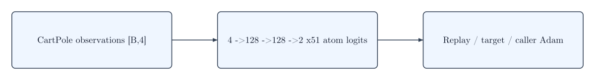
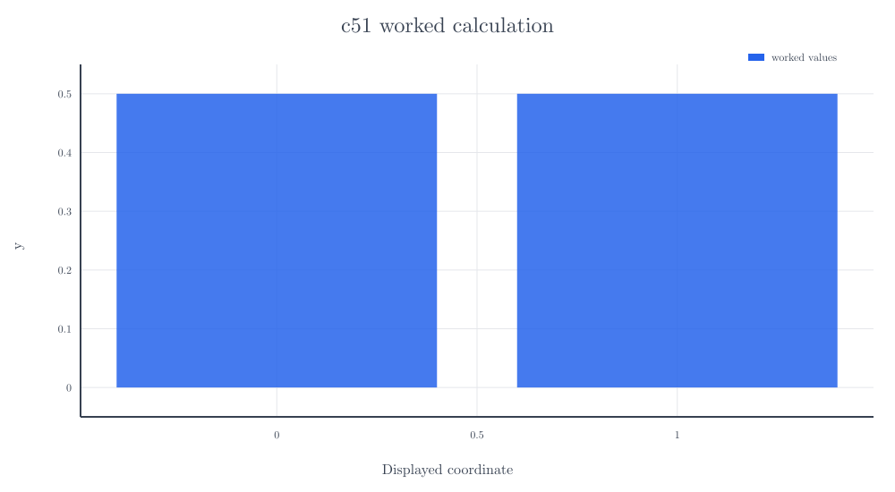
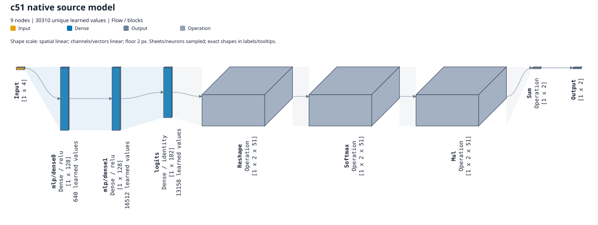
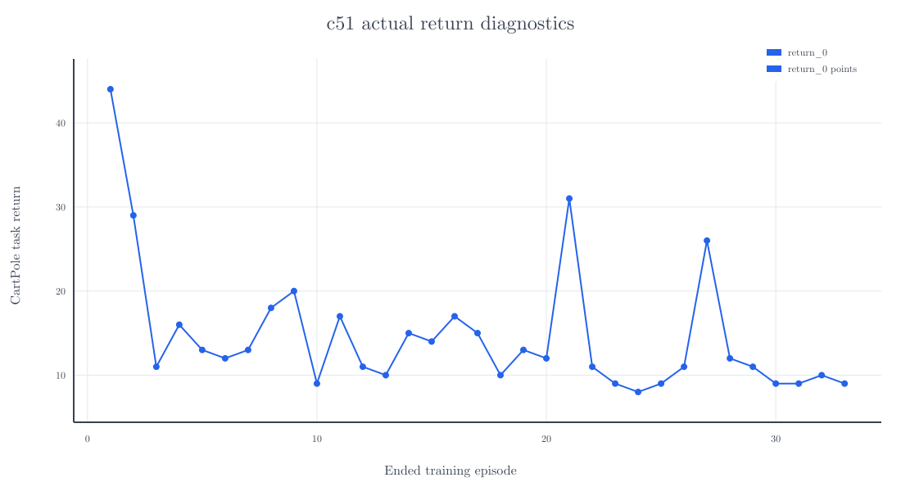
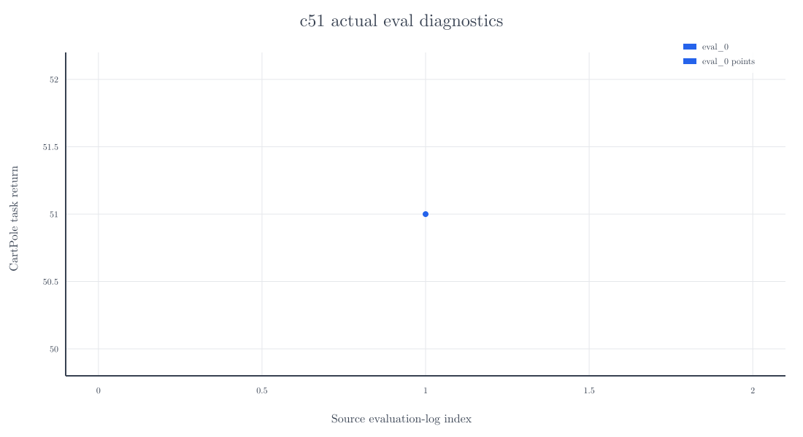

C51: Projecting a Categorical Bellman Distribution
Abstract
The complete source CartPole protocol uses native tensors and explicit caller-owned Adam, target updates and replay. The report defaults to a bounded 512-step demonstration; full-training convergence checks are deferred in that mode. The original opt-in full budget remains available with DATAMUNGE_EXAMPLES_FULL=1. No TensorFlow parity or solved-control claim is made from the bounded run.
Architecture and learning data
4 ->128 ->128 ->2 x51 atom logits. Source hidden width128, action count2 and observation width4 are retained; detailed parameter names and distributions remain editable below.
#include <dm/dm.hpp>
int main(){std::filesystem::create_directories("build");dm::graphics::Diagram d(29,1200);dm::graphics::DiagramNodeStyle s;s.width=14;s.height=5;s.font_size=23;d.node("state",{-18,0},"CartPole observations [B,4]",s).node("graph",{0,0},"4 ->128 ->128 ->2 x51 atom logits",s).node("learning",{18,0},"Replay / target / caller Adam",s).edge("state","graph").edge("graph","learning").save_svg("build/c51_method.svg");}
A hand-checkable calculation
A terminal reward.5 lies halfway between support atoms0 and1. All incoming probability is projected equally to those atoms, independent of the next-state distribution.
#include <dm/dm.hpp>
int main(){std::filesystem::create_directories("build");float p[]={.5f,.5f},r[]={.5f},done[]={1},out[2];dm::nn::models::ProjectDistribution(p,r,done,1,2,0,1,.9f,out);std::vector<double>values{out[0],out[1]};std::print("| coordinate | computed value |\n|---:|---:|\n");for(size_t i=0;i<values.size();++i)std::print("| {} | {:.9f} |\n",i,values[i]);dm::nn::save_npz("build/c51_worked.npz",{{"values",dm::nn::from_vector(values)}});std::vector<double>x(values.size());std::iota(x.begin(),x.end(),0.);double low=std::min(0.,*std::min_element(values.begin(),values.end())),high=std::max(0.,*std::max_element(values.begin(),values.end())),span=std::max(1.,high-low);dm::graphics::RPlot::create().bars(x,values,"worked values",{37,99,235}).ylim(low-.05*span,high+.05*span).title("c51 worked calculation").x_label("Displayed coordinate").size(1000,550).save_svg("build/c51_worked.svg");}| coordinate | computed value |
|---|---|
| 0 | 0.500000000 |
| 1 | 0.500000000 |

Inspect the actual native model graph
This separate native trace calls the same canonical forward graph and uses the source128-wide preset with four observations and two actions. Quantile/atom axes retain their source sizes. Noisy layers use scale0 for this architecture trace; the experiment retains its original noisy calls. This visualization initializes its own store and does not modify the fitted experiment.
#include <dm/dm.hpp>
int main(){namespace n=dm::nn;namespace m=n::models;std::filesystem::create_directories("build");n::ParameterStore parameters(0);n::Generator noise(12345);std::vector<float>atoms(51);float top=1.f/(1.f-.98f);for(int i=0;i<51;++i)atoms[i]=i*top/50;auto support=n::from_vector(atoms);n::Module network([&](const n::Tensor& x){return m::CategoricalQ(parameters,x,128,2,support).q;},"c51 native source model");n::ModelPlotOptions options;options.detail=n::ModelPlotDetail::Blocks;options.sizing.minimum_extent=2;options.sizing.max_planes=2;network.plot(n::zeros({1,4}),options).save_svg("build/c51_network.svg");}
Complete source interaction and fitting program
The default source run caps steps at512, warmup at32, minibatch size at8, and uses one evaluation episode at the final log. It retains native128-wide models, source seeds and all comparison variants. Full mode retains the source requested50000-step budget (40000 for Double-DQN/n-step comparisons). Set DATAMUNGE_EXAMPLES_FULL=1 in the mep process environment to opt into that distinct, longer experiment and its convergence assertions. Every loss, gradient/clipping/Adam step, target synchronization and episode loop is visible here.
#include <dm/dm.hpp>
namespace report_capture {
inline dm::nn::NamedTensors arrays;inline int monitor_index=0,checkpoint_index=0;
template<class T>void Save(const std::string& name,const std::vector<T>&v){arrays.push_back({name,dm::nn::from_vector(v)});}
struct Checkpoint{dm::nn::ParameterStore& online;dm::nn::ParameterStore& target;~Checkpoint(){auto tag=std::to_string(checkpoint_index++);for(const auto& name:online.names())arrays.push_back({"online_"+tag+"_"+name,online.at(name).detach().clone()});for(const auto& name:target.names())arrays.push_back({"target_"+tag+"_"+name,target.at(name).detach().clone()});}};
struct Flush{~Flush(){if(!arrays.empty()){std::filesystem::create_directories("build");dm::nn::save_npz("build/c51_source.npz",arrays);}}};inline Flush flush;
}
// CMD: just run-nn c51
// Distributional RL: C51.
//
// Port of tflow's c51. Rather than the expected return, the network predicts
// a whole return distribution for each action as a categorical distribution
// over 51 fixed atoms z_i in [v_min, v_max] (Bellemare et al. 2017). The
// Bellman update shifts and shrinks the next state's distribution,
// r + gamma z, which lands between atoms, so it is projected back onto the
// support (done on the host in rl::ProjectDistribution). The loss is the
// cross-entropy between that projected target and the predicted distribution
// of the taken action.
//
// In TF the networks, loss and Adam were one graph; here they are eager nn
// ops over two ParameterStores (target network under NoGradGuard). The
// CartPole dynamics, replay sampling and epsilon draws use the same
// std::mt19937_64 streams as TF; the weights use nn's initialiser, so the
// learning curves match TF statistically, not digit for digit. The vsim video
// of the best evaluation episode is omitted. Options: the rl::DqnConfig keys
// (steps=, lr=, seed=, ...).
// Editable workflow support: checks.hpp
// Small runtime checks used by the executable nn examples. They stay on in
// Release builds and make the example exit nonzero on failure, so `just
// run-all-nn` doubles as a regression test against the recorded TF numbers.
// Editable workflow support: runtime.hpp
// Bounded demonstrations by default; opt into convergence experiments explicitly.
namespace example_runtime {
inline bool Full() {
const char* value = std::getenv("DATAMUNGE_EXAMPLES_FULL");
return value && std::string(value) == "1";
}
template <typename T> T Limit(T requested, T quick_limit) {
return Full() ? requested : std::min(requested, quick_limit);
}
inline void Describe() {
if (!Full())
std::cout << "Quick demonstration: bounded training; convergence metrics require "
"DATAMUNGE_EXAMPLES_FULL=1.\n";
}
} // namespace example_runtime
namespace check {
inline void Require(bool condition, const std::string& message) {
if (!condition) throw std::runtime_error(message);
}
// A short demonstration checks execution, derivatives and persistence; reaching
// a published accuracy/return requires the separately requested full schedule.
inline void TrainingQuality(bool condition, const std::string& message) {
if (example_runtime::Full()) Require(condition, message);
else std::cout << " full-training quality check deferred: " << message << '\n';
}
inline void Near(double actual, double expected, double tolerance, const std::string& message) {
if (!std::isfinite(actual) || !std::isfinite(expected) || std::abs(actual - expected) > tolerance)
throw std::runtime_error(message + ": got " + std::to_string(actual) + ", expected " + std::to_string(expected));
}
/// Expects `f` to throw; returns the message.
template <typename F>
std::string Throws(F&& f, const std::string& message) {
try {
f();
} catch (const std::exception& e) {
return e.what();
}
throw std::runtime_error(message + ": expected an exception");
}
} // namespace check
inline void Header(const std::string& title) {
const std::size_t pad = title.size() < 60 ? 60 - title.size() : 0;
std::cout << "\n== " << title << " " << std::string(pad, '=') << "\n";
}
// Editable workflow support: rl/classic_control.hpp
namespace rl {
using datamunge::rl::environments::kPi;
using datamunge::rl::environments::Clamp;
using datamunge::rl::environments::WrapAngle;
using datamunge::rl::environments::CartPole;
using datamunge::rl::environments::MountainCar;
using datamunge::rl::environments::MountainCarContinuous;
using datamunge::rl::environments::Pendulum;
using datamunge::rl::environments::Acrobot;
}
// Editable workflow support: rl/dqn_common.hpp
// datamunge::nn port of tflow_examples src/common/rl/dqn_common.h.
// Pieces shared by the DQN-family examples: hyper-parameters, the epsilon
// schedule, a training monitor, Q-value heads (plain / dueling), greedy
// evaluation, the C51 distribution projection, and Adam with global-norm
// clipping (tflow's nn::Adam).
//
// Changes from the TF version: the TF hardware options (device=, threads=,
// xla=) are accepted and ignored, since nn runs eagerly on the CPU; QHead
// builds on a ParameterStore and returns a tensor instead of adding graph
// nodes; the noisy-network head (nn::NoisyDense) is not included, because
// datamunge::nn has no noisy layer yet.
// Editable workflow support: rl/env.hpp
namespace rl {
using datamunge::rl::environments::Obs;
using datamunge::rl::environments::Action;
using datamunge::rl::environments::ActionSpace;
using datamunge::rl::environments::StepResult;
using datamunge::rl::environments::Env;
using datamunge::rl::environments::EnvBase;
using datamunge::rl::environments::Transition;
using datamunge::rl::environments::TabularEnv;
}
// Editable workflow support: rl/utils.hpp
// datamunge::nn port: copied from tflow_examples src/common/rl/utils.h (TF-free code, unchanged).
// Small helpers shared by the RL examples: episode statistics, random and
// greedy rollouts, and printing.
namespace rl {
struct EpisodeStats {
std::vector<float> returns;
std::vector<int> lengths;
float mean_return() const {
return returns.empty() ? 0.f
: std::accumulate(returns.begin(), returns.end(), 0.f) / returns.size();
}
float mean_length() const {
return lengths.empty() ? 0.f
: std::accumulate(lengths.begin(), lengths.end(), 0.f) / lengths.size();
}
float min_return() const { return *std::min_element(returns.begin(), returns.end()); }
float max_return() const { return *std::max_element(returns.begin(), returns.end()); }
};
// Run `episodes` episodes of `env` choosing actions with `policy(obs)`.
// Uniformly random actions.
inline void PrintStats(const std::string& label, const EpisodeStats& s) {
std::printf(" %-32s return mean %8.2f min %8.2f max %8.2f length mean %6.1f\n",
label.c_str(), s.mean_return(), s.min_return(), s.max_return(), s.mean_length());
}
using dm::rl::foundations::ArgMax;using dm::rl::foundations::ArgMaxRandomTie;
inline std::string FormatObs(const Obs& o, int max_elems = 8) {
std::string s = "[";
for (size_t i = 0; i < o.size() && static_cast<int>(i) < max_elems; ++i) {
char buf[32];
std::snprintf(buf, sizeof buf, "%s%.3f", i ? " " : "", o[i]);
s += buf;
}
if (static_cast<int>(o.size()) > max_elems) s += " ...";
return s + "]";
}
} // namespace rl
namespace rl {
namespace nn = datamunge::nn;
struct DqnConfig {
int steps = 50000; // environment steps
int warmup = 1000; // steps before training starts
int batch = 64;
int buffer = 50000;
float gamma = 0.98f; // 0.99 is the usual choice; 0.98 bounds Q by 50 and makes CartPole far more stable
float lr = 5e-4f;
float clip_norm = 10.f;
int target_sync = 500; // hard target update period (steps), used when tau == 1
float tau = 0.005f; // target <- tau * online + (1 - tau) * target every step; tau = 1 means a hard copy every target_sync steps
float eps_start = 1.f, eps_end = 0.05f;
int eps_decay_steps = 10000;
int hidden = 128;
int train_every = 2;
int log_every = 5000;
int eval_every = 5000;
int eval_episodes = 5;
uint64_t seed = 0;
};
// TF-only options that the ports accept and ignore.
inline bool IsHardwareOption(const std::string& key) {
return key == "device" || key == "threads" || key == "intra_threads" || key == "inter_threads" || key == "xla";
}
// Overrides from the command line, e.g. `just run-nn dqn steps=50000 lr=5e-4`.
inline void ParseConfig(int argc, char** argv, DqnConfig* c) {
for (int i = 1; i < argc; ++i) {
const std::string arg = argv[i];
const size_t eq = arg.find('=');
if (eq == std::string::npos) continue;
const std::string key = arg.substr(0, eq);
const float v = std::strtof(arg.c_str() + eq + 1, nullptr);
if (IsHardwareOption(key)) continue;
if (key == "steps") c->steps = static_cast<int>(v);
else if (key == "warmup") c->warmup = static_cast<int>(v);
else if (key == "batch") c->batch = static_cast<int>(v);
else if (key == "buffer") c->buffer = static_cast<int>(v);
else if (key == "gamma") c->gamma = v;
else if (key == "lr") c->lr = v;
else if (key == "clip_norm") c->clip_norm = v;
else if (key == "target_sync") c->target_sync = static_cast<int>(v);
else if (key == "tau") c->tau = v;
else if (key == "eps_start") c->eps_start = v;
else if (key == "eps_end") c->eps_end = v;
else if (key == "eps_decay_steps") c->eps_decay_steps = static_cast<int>(v);
else if (key == "hidden") c->hidden = static_cast<int>(v);
else if (key == "train_every") c->train_every = static_cast<int>(v);
else if (key == "log_every") c->log_every = static_cast<int>(v);
else if (key == "eval_every") c->eval_every = static_cast<int>(v);
else if (key == "seed") c->seed = static_cast<uint64_t>(v);
else if (key != "task" && key != "game") std::fprintf(stderr, "unknown option %s\n", arg.c_str());
}
if (!example_runtime::Full()) {
c->steps = std::min(c->steps, 512);
c->warmup = std::min(c->warmup, 32);
c->batch = std::min(c->batch, 8);
c->log_every = c->eval_every = std::max(1, c->steps);
c->eval_episodes = 1;
c->eps_decay_steps = std::min(c->eps_decay_steps, c->steps);
example_runtime::Describe();
}
}
inline float Epsilon(const DqnConfig& c, int step) {
const float frac = std::min(1.f, static_cast<float>(step) / c.eps_decay_steps);
return c.eps_start + frac * (c.eps_end - c.eps_start);
}
// Greedy evaluation with any action function.
inline float Evaluate(Env& env, const std::function<int(const Obs&)>& act, int episodes, uint64_t seed) {
double total = 0;
for (int e = 0; e < episodes; ++e) {
Obs obs = env.reset(seed + e);
while (true) {
StepResult r = env.step(act(obs));
total += r.reward;
obs = r.obs;
if (r.done()) break;
}
}
return static_cast<float>(total / episodes);
}
// Tracks episode returns and losses and prints one line per log period.
class Monitor {
public:
explicit Monitor(const DqnConfig& cfg, const char* third_column = "eps") : cfg_(cfg) {
std::printf(" %8s %8s %12s %7s %10s %10s\n", "step", "episodes", "return(20)", third_column, "loss", "eval");
}
void EndEpisode(float ret) { returns_.push_back(ret); }
~Monitor(){auto tag=std::to_string(id_);report_capture::Save("return_"+tag,returns_);report_capture::Save("step_"+tag,steps_);report_capture::Save("eval_"+tag,evaluation_);report_capture::Save("loss_"+tag,mean_losses_);}
void AddLoss(float loss) { losses_.push_back(loss); }
int episodes() const { return static_cast<int>(returns_.size()); }
float RecentReturn(int n = 20) const {
if (returns_.empty()) return 0.f;
const size_t from = returns_.size() > static_cast<size_t>(n) ? returns_.size() - n : 0;
return std::accumulate(returns_.begin() + from, returns_.end(), 0.f) / (returns_.size() - from);
}
void Log(int step, float eps, float eval_return) {
const float loss = losses_.empty() ? 0.f : std::accumulate(losses_.begin(), losses_.end(), 0.f) / losses_.size();
steps_.push_back(step);evaluation_.push_back(eval_return);mean_losses_.push_back(loss);
losses_.clear();
char eval[16];
if (std::isnan(eval_return)) std::snprintf(eval, sizeof eval, "%10s", "");
else std::snprintf(eval, sizeof eval, "%10.1f", eval_return);
std::printf(" %8d %8d %12.1f %7.3f %10.4f %s\n", step, episodes(), RecentReturn(), eps, loss, eval);
std::fflush(stdout);
}
private:
int id_=report_capture::monitor_index++;std::vector<double>steps_,evaluation_,mean_losses_;
DqnConfig cfg_;
std::vector<float> returns_, losses_;
};
using dm::nn::models::ProjectDistribution;
// One observation as a [1, obs_dim] tensor.
inline nn::Tensor Row(const Obs& o) { return nn::from_vector(o, {1, static_cast<std::int64_t>(o.size())}); }
} // namespace rl
// Editable workflow support: rl/replay.hpp
namespace rl {using dm::rl::replay::Experience;using dm::rl::replay::Batch;using dm::rl::replay::ReplayBuffer;using dm::rl::replay::PrioritizedReplay;using dm::rl::replay::NStepBuffer;}
namespace nn = datamunge::nn;
using nn::Tensor;
int main(int argc, char** argv) {
try {
rl::DqnConfig cfg;
const int atoms = 51;
const float vmin = 0.f, vmax = 1.f / (1.f - cfg.gamma); // CartPole returns lie in [0, 1/(1-gamma)]
rl::ParseConfig(argc, argv, &cfg);
rl::CartPole env, eval_env;
const int obs_dim = env.obs_size(), A = env.action_space().n;
std::printf("== C51 on CartPole, %d steps, %d atoms on [%.0f, %.0f]\n", cfg.steps, atoms, vmin, vmax);
std::vector<float> support(atoms);
for (int i = 0; i < atoms; ++i) support[i] = vmin + i * (vmax - vmin) / (atoms - 1);
const Tensor z = nn::from_vector(support, {atoms});
using Dist=nn::models::CategoricalQPath;
nn::ParameterStore online(cfg.seed), target(cfg.seed + 1);
auto dist_net = [&](nn::ParameterStore& p, const Tensor& x) {
return nn::models::CategoricalQ(p,x,cfg.hidden,A,z);
};
{
nn::NoGradGuard no_grad;
dist_net(online, nn::zeros({1, obs_dim}));
dist_net(target, nn::zeros({1, obs_dim}));
}
nn::Optimizer report_optimizer(online,cfg.lr,{nn::OptimizerKind::Adam});
auto report_minimize=[&](const Tensor& loss){auto grads=nn::grad(loss,report_optimizer.parameters());if(cfg.clip_norm>0)grads=nn::clip_by_global_norm(grads,cfg.clip_norm).first;report_optimizer.step(grads);};
report_capture::Checkpoint checkpoint{online,target};
auto sync = [&] { target.copy_from(online, cfg.tau); };
sync();
rl::ReplayBuffer buffer(cfg.buffer, obs_dim);
rl::Monitor monitor(cfg);
std::mt19937_64 rng(cfg.seed);
auto q_values = [&](const rl::Obs& o) { // the mean of each action's return distribution
nn::NoGradGuard no_grad;
return dist_net(online, rl::Row(o)).q.to_vector<float>();
};
auto greedy = [&](const rl::Obs& o) { return rl::ArgMax(q_values(o)); };
std::vector<float> probs_next(cfg.batch * atoms), target_dist(cfg.batch * atoms);
rl::Obs obs = env.reset(cfg.seed);
float ret = 0, best_eval = 0;
for (int step = 1; step <= cfg.steps; ++step) {
const float eps = rl::Epsilon(cfg, step);
const int act = std::uniform_real_distribution<float>(0, 1)(rng) < eps ? static_cast<int>(rng() % A) : greedy(obs);
rl::StepResult sr = env.step(act);
buffer.Add({obs, act, sr.reward, sr.obs, sr.terminated ? 1.f : 0.f, {}});
ret += sr.reward;
obs = sr.obs;
if (sr.done()) {
monitor.EndEpisode(ret);
ret = 0;
obs = env.reset();
}
if (step >= cfg.warmup) {
rl::Batch b = buffer.Sample(cfg.batch, rng);
{ // 1. Target network: next-state distributions and their means.
nn::NoGradGuard no_grad;
const Dist next = dist_net(target, b.s2);
const std::vector<float> pn = next.probs.to_vector<float>(), qn = next.q.to_vector<float>();
for (int i = 0; i < cfg.batch; ++i) {
const int best = static_cast<int>(std::max_element(qn.begin() + i * A, qn.begin() + (i + 1) * A) - (qn.begin() + i * A));
std::copy(pn.begin() + (i * A + best) * atoms, pn.begin() + (i * A + best + 1) * atoms, probs_next.begin() + i * atoms);
}
}
// 2. Project r + gamma (1 - done) z onto the support.
const std::vector<float> r = b.r.to_vector<float>(), done = b.done.to_vector<float>();
rl::ProjectDistribution(probs_next.data(), r.data(), done.data(), cfg.batch, atoms, vmin, vmax, cfg.gamma,
target_dist.data());
const Tensor m = nn::from_vector(target_dist, {cfg.batch, atoms});
// 3. Cross-entropy between m and p(. | s, a).
const Dist on = dist_net(online, b.s);
const Tensor onehot = nn::expand_dims(nn::one_hot(b.a, A), 2); // [B, A, 1]
const Tensor log_p = nn::log_softmax(nn::sum(on.logits * onehot, {1})); // [B, atoms]
const Tensor loss = nn::mean(-nn::sum(m * log_p, {1}), {0});
report_minimize(loss);
const float l = loss.item<float>();
check::Require(std::isfinite(l), "finite cross-entropy loss");
monitor.AddLoss(l);
}
if (cfg.tau < 1.f || step % cfg.target_sync == 0) sync();
if (step % cfg.log_every == 0) {
const float ev = step % cfg.eval_every == 0 ? rl::Evaluate(eval_env, greedy, cfg.eval_episodes, 1000 + step) : NAN;
if (!std::isnan(ev)) best_eval = std::max(best_eval, ev);
monitor.Log(step, eps, ev);
}
}
const float final_eval = rl::Evaluate(eval_env, greedy, 20, 777);
std::printf(" final greedy evaluation over 20 episodes: %.1f\n", final_eval);
// The learned return distribution for a balanced start state and for a
// state about to fail.
std::vector<float> q_states;
for (const rl::Obs& o : std::vector<rl::Obs>{{0, 0, 0, 0}, {0, 0, 0.19f, 2.f}}) {
nn::NoGradGuard no_grad;
const Dist d = dist_net(online, rl::Row(o));
const std::vector<float> p = d.probs.to_vector<float>(), qv = d.q.to_vector<float>();
const int best = qv[1] > qv[0] ? 1 : 0;
q_states.push_back(qv[best]);
std::printf("\n state %s, best action %d, Q = %.1f; return distribution (10 bins of %.0f):\n ",
rl::FormatObs(o).c_str(), best, qv[best], (vmax - vmin) / 10);
float total = 0;
for (int bin = 0; bin < 10; ++bin) {
float mass = 0;
for (int i = 0; i < atoms; ++i)
if (support[i] >= vmin + bin * (vmax - vmin) / 10 &&
support[i] < vmin + (bin + 1) * (vmax - vmin) / 10 + (bin == 9 ? 1 : 0))
mass += p[best * atoms + i];
total += mass;
std::printf(" %3.0f%%", 100 * mass);
}
std::printf("\n");
check::Require(std::abs(total - 1.f) < 1e-3f, "the return distribution sums to 1");
}
// A random policy averages about 22; over seeds 0..2 the final evaluation was 323..500 in TF, 500 here.
check::TrainingQuality(std::max(best_eval, final_eval) >= 150, "C51 learned to balance (best greedy evaluation >= 150)");
check::TrainingQuality(q_states[0] > q_states[1], "the balanced state is worth more than the falling one");
} catch (const std::exception& e) {
std::cerr << "FAILED: " << e.what() << "\n";
return 1;
}
return 0;
}
Quick demonstration: bounded training; convergence metrics require DATAMUNGE_EXAMPLES_FULL=1.
== C51 on CartPole, 512 steps, 51 atoms on [0, 50]
step episodes return(20) eps loss eval
512 33 13.1 0.050 3.8276 51.0
final greedy evaluation over 20 episodes: 37.2
state [0.000 0.000 0.000 0.000], best action 0, Q = 25.2; return distribution (10 bins of 5):
9% 10% 12% 8% 10% 12% 8% 10% 10% 11%
state [0.000 0.000 0.190 2.000], best action 1, Q = 23.0; return distribution (10 bins of 5):
16% 10% 11% 7% 9% 11% 8% 10% 9% 10%
full-training quality check deferred: C51 learned to balance (best greedy evaluation >= 150)
full-training quality check deferred: the balanced state is worth more than the falling oneInspect the actual bounded-run diagnostics
These figures read captured original episode returns and logged evaluation/loss values. A single evaluation point is shown as a point; it does not imply a learning trend. Source quality checks deferred in bounded mode remain explicitly labelled in the output.
#include <dm/dm.hpp>
int main(){auto archive=dm::nn::load_npz("build/c51_source.npz");auto plot=dm::graphics::RPlot::create();int series=0;for(const auto& [key,tensor]:archive){if(!key.starts_with("return_"))continue;auto values=tensor.to_vector<double>();std::vector<double>x;for(size_t i=0;i<values.size();++i)x.push_back(i+1);plot.lines(x,values,key,{37+series*50,99,235-series*50}).points(x,values,key+" points",{37+series*50,99,235-series*50},4);++series;}plot.title("c51 actual return diagnostics").x_label("Ended training episode").y_label("CartPole task return").size(1100,600).save_svg("build/c51_return.svg");}
#include <dm/dm.hpp>
int main(){auto archive=dm::nn::load_npz("build/c51_source.npz");auto plot=dm::graphics::RPlot::create();int series=0;for(const auto& [key,tensor]:archive){if(!key.starts_with("eval_"))continue;auto values=tensor.to_vector<double>();std::vector<double>x;for(size_t i=0;i<values.size();++i)x.push_back(i+1);plot.lines(x,values,key,{37+series*50,99,235-series*50}).points(x,values,key+" points",{37+series*50,99,235-series*50},4);++series;}plot.title("c51 actual eval diagnostics").x_label("Source evaluation-log index").y_label("CartPole task return").size(1100,600).save_svg("build/c51_eval.svg");}
Interpretation and provenance
Bounded execution verifies finite losses, data flow and the displayed checks; it provides no full-training convergence guarantee or framework-equivalence evidence. The original seeds, defaults, source optional full mode and weak results are preserved. Saved online/target parameter arrays are actual final source checkpoints. Replay and pure forward graphs live in datamunge; optimizers and all fitting/collection/evaluation loops remain in this complete editable report.